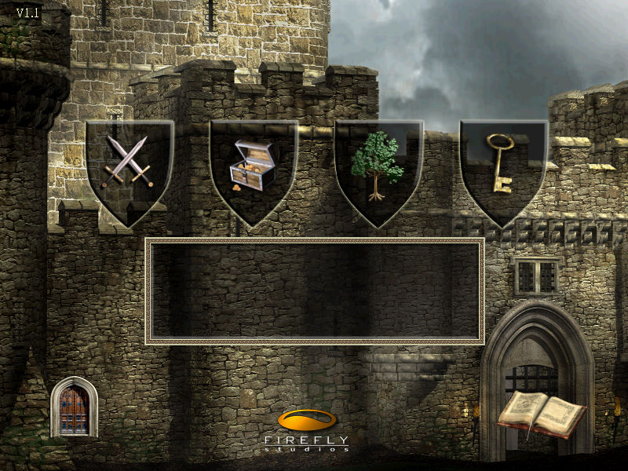
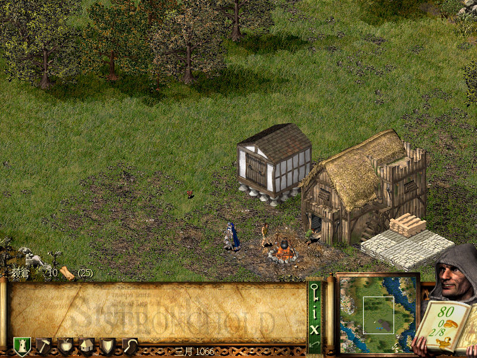

名稱：危城之戰1／要塞1／要塞攻防戰1／凱撒魔堡／愷撒魔堡 (Stronghold，中文／英文版)
簡介：FireFly 2001年出品的即時戰略遊戲，由Gathering of Developers代理發行，2002年
由大宇繁中化並代理發行，大陸則由天人互動簡中化並代理發行。2002年再推出增加
地圖的最新版「豪華版（Deluxe）」 [待補]。


保護：英文版豪華版為光碟SafeDisc 2.60（最終版無保護），繁中版為光碟，破解碼：
_Stronghold.exe
E8 E6 08 00 00 BD 01 00 00 00 3B C5 0F 84 71 07 00 00
90 90 90 90 90 -- -- -- -- -- -- -- 90 90 90 90 90 90
備註：繁中版與簡中版均為1.1版，英文豪華版／最終版（內容相同）為1.2版。